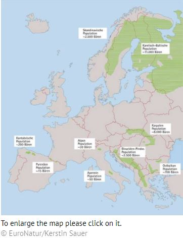

Brief fact sheet European Brown Bear (Ursus arctos)
There was a time in when bears lived everywhere where there was forest and that was practically the whole of Europe. With the clearing of the woods the animals were forced to retreat into more and more remote regions. Already by the Middle Ages the habitat of bears was limited to inaccessible, still wooded mountains. In Europe the best bear habitats are extensive forests on steep-sloped, rocky territory where humans hardly ever stray. The densest populations of bears in Europe are found in the Dinaric Mountains and the Carpathians. There are also smaller populations in the Pyrenees, the Alps and the Apennines. In the Cantabrian Mountains the numbers of brown bears have been on the rise since the 1990s. This is the result of the untiring efforts of EuroNatur and its Spanish partner FAPAS.
Data source: Large Carnivore Initiative for Europe (LCIE) data and from our own surveys. The boundaries marked only give the core distribution areas as known at present. Individual bears and smaller populations may be found outside these areas.
The European brown bear stands 1.70 to 2.20 metres (5.57ft to 7. 21ft) tall.
Depending on the distribution region its weight can vary between 100 and 350
kilos. In all populations the males are heavier than the females.
Tracks:
The mating season of brown bears is May to July. Both male and female bears are polygamous and may mate with different partners several times. The fertilized ovum remains free-floating in the uterus for up to five months, only attaching to the uterine wall at the beginning of hibernation when the real pregnancy begins. The cubs are born between January and March. A litter is usually two to three cubs and the female bear raises them alone. During this phase a female bear is extremely aggressive and will occasionally attack male bears if they come too close to the cubs. The cubs stay one and half to two years with their mother. As soon as she is ready to mate again she leaves her cubs. The cubs stay together a few months and then set off to find their own terrain.
Depending on the region nearly three-quarters of what brown bears eat is made up of plant life such as berries and grasses. In summer and autumn with fruit, nuts and acorns, chestnuts and beechnuts they feed more, taking in around 20 000 calories daily (equivalent to 30 kilos of apples) to build up the extra fat they need for hibernation. When bears leave their dens in spring there is little food to be found so they cover their needs with roots, grasses and herbs but also insects. Carrion, too, is now also an important source of food: this can be the remains of any animals, whether wildlife (e.g. deer) or grazing animals (e.g. sheep), which have not survived the winter.
It is estimated that bears living in the wild can reach the age of 20 to 30 years.
The average life expectation is, however, only six years. Many animals die
of under-nourishment or disease. The bear's greatest enemy is man: in some
countries bear hunting is still the order of the day and bears are often
victims of poaching. The construction of roads fragments their habitats
separating populations from one another and vehicle collisions with bears
are on the increase.
In many countries in Europe bears are protected by law. International agreements
in which the protection of bears is statutory are for example: